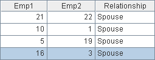
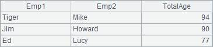

7. Count the Married Couples Whose Total Age is Over 70 Inclusive
l Problem
An enterprise is planning to allocate the welfare houses with low price to its married couple employees,who are both currently serving the enterprise, and whose total age is not less than 70. The table below is the Employee table:

The relationship table below records the relations cerain two employees. Both Emp1 and Emp2 fields hold the employee IDs. There are no duplicate relationships in this table:

Try to find the couples whose total age reaches or exceeds 70.
l Tip
General steps: Regarding this issue, all you need is to replace the Employee fields in the relationship table with the corresponding employee records. Then, you can directly retrieve their birthdays. Now it is much easier to compute the age, the sum of ages, and to perform other operations such as filtering.
1. Firstly, select employees who are married couples from the relationship table.
2. Secondly, replace the employee fields of selected records with the corresponding employee records in the Employee table according to employee IDs. Then, you can retrieve the birthday of each employee from this table directly and thus get the age.
3. Generate a new table sequence on the basis of this table, including the names and total age of the couple.
4. Select out the records in which the total age is not less than 70.
l Code
|
|
A |
|
|
1 |
=file("C:\\txt\\Employees.txt").import@t() |
Employee table |
|
2 |
=file("C:\\txt\\EmpRel.txt").import@t() |
Employee Relation table |
|
3 |
=A2.select(Relationship=="Spouse") |
Select out the employee couple |
|
4 |
>A1.keys(ID) |
Set the primary key for the employee |
|
5 |
>A3.switch(Emp1,A1;Emp2,A1) |
Replace the records of the two employee fields in the Employee Relation table with the corresponding record |
|
6 |
=A3.new(Emp1.Name:Emp1, Emp2.Name:Emp2, age(Emp1.Birthday) +age(Emp2.Birthday):TotalAge) |
Generate a new table sequence by utilizing the employee relation table and sum up the ages of every couple |
|
7 |
=A6.select(TotalAge>=70) |
Screen out the couple whose total age is over 70 |
l Result
